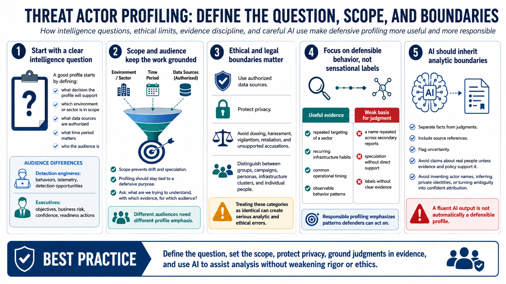

Scope, Ethics, and Analytic Boundaries
Connecting to LMS... Progress: in progress

Narration
A good profile starts with a clear intelligence question. The team should define what decision the profile will support, which environment or sector is in scope, what data sources are authorized, what time period is relevant, and who the audience is. A profile written for detection engineers may emphasize behaviors and telemetry. A profile written for executives may emphasize likely objectives, business risk, confidence, and recommended readiness actions.
Ethical and legal boundaries are part of the analytic method. Defensive profiling should use authorized data sources and protect privacy. It should avoid doxxing, harassment, vigilantism, retaliation, or unsupported accusations. Analysts should distinguish groups, campaigns, personas, infrastructure clusters, and individual people. Those categories can overlap in public reporting, but treating them as identical can create serious analytic and ethical errors.
Responsible profiling focuses on defensible behavior patterns rather than speculation or sensational labels. If the evidence shows repeated targeting of a sector, common infrastructure habits, or recurring operational timing, that may support a useful defensive judgment. If the evidence only shows a name repeated in several secondary reports, that may not be enough. Scope keeps the work grounded: what are we trying to understand, using which evidence, for which defensive purpose?
AI systems should inherit those boundaries. Prompts should direct the model to separate facts from judgments, include source references, flag uncertainty, and avoid claims about real people unless the evidence and policy support that discussion. The model should not be asked to invent actor names, infer private identities, or turn ambiguous observations into confident attribution. Ethics and analytic rigor are not separate concerns; they reinforce each other.